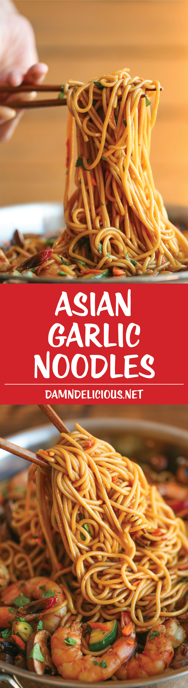

Asian Garlic Noodles

Description
Easy peasy Asian noodle stir-fry using pantry ingredients that you already have on hand. Quick, no-fuss, and made in less than 30 min!
Ingredients
- 8 ounces spaghetti
- 12 ounces medium shrimp, peeled and deveined
- 1 tablespoon olive oil
- 8 ounces cremini mushrooms, sliced
- 1 red bell pepper, diced
- 2 zucchinis, diced
- 1 carrot, grated
- 2 tablespoons chopped fresh cilantro leaves
For the sauce
- 1/3 cup reduced sodium soy sauce
- 3 cloves, garlic, minced
- 2 tablespoons brown sugar, packed
- 1 tablespoon sambal oelek (ground fresh chile paste), or more, to taste*
- 1 tablespoon oyster sauce
- 1 tablespoon freshly grated ginger
- 1 teaspoon sesame oil
Steps
- In a small bowl, whisk together soy sauce,garlic, brown sugar, sambal oelek, oyster sauce, ginger and sesame oil; set aside.
- In a large pot of boiling salted water, cook pasta according to package instructions; drain well.
- Heat olive oil in a large skillet over medium high heat. Add shrimp and 2 tbsps soy sauce mixture, and cook, stirring occasionally, until pink, about 2-3 minutes; set aside.
- Stir in mushrooms, bell pepper, zucchinis and carrot to the skillet. Cook, stirring frequently, until tender, about 3-4 minutes. Stir in spaghetti, shrimp and remaining soy sauce mixture until well combined, about 2-3 minutes.
- Serve immediately, garnished with cilantro, if desired.